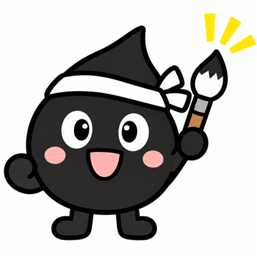
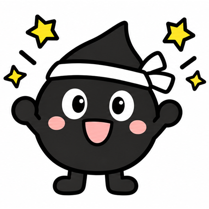

<!doctype html>
<html lang="ja">
<head>
<meta charset="utf-8">
<meta name="viewport" content="width=device-width,initial-scale=1,viewport-fit=cover">
<title>スミまると ふでの どうじょう</title>
<link rel="stylesheet" href="https://fonts.googleapis.com/css2?family=BIZ+UDPGothic:wght@400;700&display=swap">
<style>
  :root { --fs:1; --bg:#f4efe4; --paper:#fffdf8; --ink:#1d1b19; --muted:#6d655a; --line:#d8cfbf;
    --shu:#d8442b; --shu-d:#a52f1b; --ai:#27507a; --ai-d:#173654; --kin:#e2a724; }
  html { font-size:calc(16px * var(--fs)); }
  * { box-sizing:border-box; -webkit-tap-highlight-color:transparent; }
  body { margin:0; background:var(--bg); color:var(--ink); font-family:"BIZ UDPGothic","Hiragino Kaku Gothic ProN","Meiryo",sans-serif;
    min-height:100vh; display:flex; flex-direction:column; user-select:none; -webkit-user-select:none; }
  rt { font-size:.5em; }
  button { font-family:inherit; color:inherit; cursor:pointer; }

  /* 立体ボタン */
  .btn { border:0; border-radius:1rem; padding:.7rem 1.3rem; font-size:1.35rem; font-weight:700; background:#fff; color:var(--ink);
    box-shadow:0 .35rem 0 var(--line); transition:transform .06s, box-shadow .06s; min-height:3.4rem; }
  .btn:active, .btn.down { transform:translateY(.28rem); box-shadow:0 .07rem 0 var(--line); }
  .btn.red { background:var(--shu); color:#fff; box-shadow:0 .35rem 0 var(--shu-d); }
  .btn.red:active { box-shadow:0 .07rem 0 var(--shu-d); }
  .btn.blue { background:var(--ai); color:#fff; box-shadow:0 .35rem 0 var(--ai-d); }
  .btn.blue:active { box-shadow:0 .07rem 0 var(--ai-d); }
  .btn.on { background:var(--ink); color:#fff; box-shadow:0 .35rem 0 #000; }
  .btn.small { font-size:1.05rem; padding:.45rem .9rem; min-height:2.6rem; border-radius:.8rem; }
  .btn[disabled] { opacity:.45; cursor:default; }
  .btn.glow { animation:glow 1s infinite; }
  @keyframes glow { 50% { box-shadow:0 .35rem 0 var(--kin), 0 0 0 .45rem rgba(226,167,36,.45); } }

  /* 上の「いま どこ」 */
  #flow { display:flex; gap:.3rem; padding:.45rem .5rem; background:#2b2622; overflow-x:auto; align-items:stretch; }
  #flow button { flex:1 0 auto; min-width:5.2rem; border:0; border-radius:.7rem; padding:.3rem .45rem; background:#4a423b; color:#d9d0c2;
    font-size:.92rem; font-weight:700; line-height:1.25; display:flex; flex-direction:column; align-items:center; gap:.1rem; }
  #flow button b { display:grid; place-items:center; width:1.6rem; height:1.6rem; border-radius:50%; background:#6b6157; color:#fff; font-size:.95rem; }
  #flow button.done { background:#5d554c; color:#fff; }
  #flow button.done b { background:#7d9a5b; }
  #flow button.now { background:#fff; color:var(--ink); box-shadow:0 0 0 .2rem var(--kin) inset; }
  #flow button.now b { background:var(--shu); }
  #flow .gear { flex:0 0 auto; min-width:2.8rem; background:transparent; font-size:1.3rem; }

  main { flex:1; display:flex; flex-direction:column; align-items:center; padding:.7rem .8rem 0; gap:.6rem; min-height:0; }
  h1 { font-size:1.9rem; margin:.1rem 0; text-align:center; }
  h2 { font-size:1.6rem; margin:0; text-align:center; }

  /* スミまると ふきだし */
  .talk { display:flex; align-items:center; gap:.6rem; width:100%; max-width:68rem; }
  .talk img { width:4.2rem; height:4.2rem; flex:none; cursor:pointer; border-radius:50%; background:#fff; }
  .talk .fuki { position:relative; background:#fff; border:.18rem solid var(--ink); border-radius:1.1rem; padding:.35rem .9rem; font-size:1.3rem; font-weight:700; line-height:1.45; flex:1; }
  .talk .fuki::before { content:""; position:absolute; left:-.75rem; top:50%; margin-top:-.55rem; border:.55rem solid transparent; border-right-color:var(--ink); border-left:0; }
  .talk .again { flex:none; }

  .row.wide { gap:.5rem 1.6rem; }
  .row { display:flex; gap:.6rem; flex-wrap:wrap; justify-content:center; align-items:center; }
  .seg { display:flex; gap:.45rem; flex-wrap:wrap; justify-content:center; }

  /* 絵のカード */
  .card { background:var(--paper); border:.18rem solid var(--line); border-radius:1.2rem; padding:.7rem; max-width:68rem; width:100%; }
  .pic { position:relative; margin:0 auto; display:table; }
  .pic img { display:block; max-width:100%; max-height:52vh; border-radius:.8rem; background:#fff; }
  .tag { position:absolute; transform:translate(-50%,-50%); background:#fff; border:.14rem solid var(--ink); border-radius:.6rem; padding:.05rem .45rem; font-weight:700; font-size:1.05rem; white-space:nowrap; }
  .two { display:grid; grid-template-columns:minmax(0,1fr) minmax(0,1.2fr); gap:.7rem; width:100%; max-width:76rem; align-items:start; }
  .two .demo { display:flex; flex-direction:column; gap:.45rem; align-items:center; }
  .two .stage { width:min(100%, calc((100vh - 21.8rem) * 1000 / 640)); min-width:0; }
  .two .points li { font-size:1.25rem; }
  @media (max-width:800px) { .two { grid-template-columns:1fr; } }
  .points { display:grid; gap:.45rem; margin:.6rem auto 0; max-width:46rem; padding:0; list-style:none; }
  .points li { word-break:keep-all; overflow-wrap:anywhere; background:#fff; border:.14rem solid var(--line); border-radius:.9rem; padding:.45rem .8rem; font-size:1.4rem; font-weight:700; display:flex; gap:.6rem; align-items:center; }
  .points li b { display:grid; place-items:center; flex:none; width:2.1rem; height:2.1rem; border-radius:50%; background:var(--ai); color:#fff; }
  .card.side { display:flex; gap:1rem; align-items:center; justify-content:center; }
  .card.side .pic { margin:0; flex:0 1 auto; }
  .card.side .points { margin:0; flex:1 1 18rem; max-width:30rem; }
  @media (max-width:800px) { .card.side { flex-direction:column; } }
  .three { display:grid; grid-template-columns:repeat(3,1fr); gap:.6rem; }
  .three figure { margin:0; background:#fff; border:.14rem solid var(--line); border-radius:1rem; padding:.4rem; text-align:center; }
  .three img { width:100%; max-height:36vh; object-fit:contain; }
  .three figcaption { font-size:1.3rem; font-weight:700; }

  /* 筆のキャンバス */
  .stage { position:relative; width:min(100%, calc((100vh - 19.6rem) * 1000 / 640)); min-width:20rem; }
  .stage canvas { display:block; width:100%; background:var(--paper); border:.2rem solid var(--ink); border-radius:1rem; touch-action:none; }
  .word { position:absolute; left:50%; top:.4rem; transform:translateX(-50%); font-size:2.6rem; font-weight:700; color:var(--shu); background:rgba(255,255,255,.9); border-radius:1rem; padding:0 .8rem; pointer-events:none; white-space:nowrap; }
  .word.pl { left:.5rem; transform:none; } .word.pr { left:auto; right:4.6rem; transform:none; }
  .word small { display:block; font-size:1.15rem; color:var(--ink); text-align:center; }
  .chips { display:flex; gap:.4rem; justify-content:center; flex-wrap:wrap; }
  .chip { border:.16rem solid var(--line); background:#fff; border-radius:999px; padding:.15rem .9rem; font-size:1.3rem; font-weight:700; color:var(--muted); }
  .chip.on { border-color:var(--shu); background:var(--shu); color:#fff; transform:scale(1.12); }
  .lv { position:relative; }
  .lv .lock { position:absolute; right:-.3rem; top:-.5rem; font-size:1.1rem; }
  .lv .ok { position:absolute; right:-.4rem; top:-.6rem; width:1.7rem; height:1.7rem; }

  /* はんこ */
  .hanko { display:inline-grid; place-items:center; width:3.6rem; height:3.6rem; border-radius:50%; border:.22rem solid var(--shu); color:var(--shu); font-weight:700; font-size:.9rem; line-height:1.1; text-align:center; transform:rotate(-8deg); background:rgba(216,68,43,.06); }
  .hanko.empty { border-style:dashed; border-color:var(--line); color:var(--line); transform:none; background:transparent; }
  .hgrid { display:grid; grid-template-columns:repeat(5, auto); gap:.6rem; justify-content:center; }
  .pop { position:fixed; inset:0; background:rgba(30,25,20,.55); display:grid; place-items:center; z-index:20; padding:1rem; }
  .pop > div { background:var(--paper); border-radius:1.4rem; padding:1.2rem 1.4rem; max-width:44rem; width:100%; max-height:92vh; overflow:auto; text-align:center; }
  .big-hanko { width:9rem; height:9rem; font-size:1.9rem; border-width:.5rem; animation:pon .45s cubic-bezier(.2,1.6,.4,1); margin:.4rem auto; }
  @keyframes pon { from { transform:scale(2.4) rotate(-25deg); opacity:0; } }

  .count { display:flex; gap:.6rem; justify-content:center; flex-wrap:wrap; }
  .sheet { width:5.2rem; height:6.8rem; background:#fff; border:.16rem solid var(--ink); border-radius:.3rem; display:grid; place-items:center; font-size:1.6rem; font-weight:700; color:var(--line); position:relative; }
  .sheet.done { color:var(--ink); }
  .sheet.done::after { content:"できた"; position:absolute; right:-.5rem; bottom:-.5rem; width:2.6rem; height:2.6rem; display:grid; place-items:center; border-radius:50%; border:.16rem solid var(--shu); color:var(--shu); font-size:.7rem; background:#fff; transform:rotate(-10deg); }

  footer { display:flex; justify-content:space-between; align-items:center; gap:.6rem; padding:.5rem .9rem .7rem; width:100%; max-width:70rem; margin:0 auto; }
  .pin { display:grid; grid-template-columns:repeat(3,4.2rem); gap:.5rem; justify-content:center; margin:.6rem 0; }
  .dots { font-size:2rem; letter-spacing:.5rem; min-height:2.6rem; }
  table { border-collapse:collapse; margin:.4rem auto; font-size:1.05rem; }
  td, th { border:1px solid var(--line); padding:.3rem .6rem; }
  .set { display:grid; gap:.7rem; text-align:left; font-size:1.1rem; }
  .set > div { background:#fff; border:.12rem solid var(--line); border-radius:.9rem; padding:.6rem .8rem; }
  video { display:block; width:100%; border:.2rem solid var(--ink); border-radius:1rem; background:#fff; }
</style>
</head>
<body>
<nav id="flow"></nav>
<main id="main"></main>
<footer id="foot"></footer>
<div id="popRoot"></div>

<script>
'use strict';
/* =========================================================
   スミまると ふでの どうじょう（書写・毛筆）
   かだい：せんの れんしゅう（よこ画・左はらい・右はらい）／ふじ山（ふ・じ・山）
   記録はとりません。設定と はんこ は この端末のブラウザの中だけに保存します。
   ========================================================= */
const W = 1000, H = 640;
const $ = (s, r) => (r || document).querySelector(s);
const R = (k, y) => '<ruby>' + k + '<rt>' + y + '</rt></ruby>';
const plain = html => html.replace(/<rt>.*?<\/rt>/g, '').replace(/<[^>]+>/g, '').replace(/[①-⑨]/g, '');

/* ---------- 保存 ---------- */
const KEY = 'shosha.v1';
const DEF = { stamps: {}, fails: {}, rate: 0.8, fs: 1, openAll: false, pin: '1234', sheets: 3 };
let S = Object.assign({}, DEF);
try { S = Object.assign({}, DEF, JSON.parse(localStorage.getItem(KEY) || '{}')); } catch (e) {}
const save = () => { try { localStorage.setItem(KEY, JSON.stringify(S)); } catch (e) {} };
const applyFs = () => document.documentElement.style.setProperty('--fs', S.fs);
applyFs();

/* ---------- 読み上げ ---------- */
function speak(html) {
  if (!('speechSynthesis' in window)) return;
  try {
    speechSynthesis.cancel();
    const u = new SpeechSynthesisUtterance(plain(html));
    u.lang = 'ja-JP'; u.rate = S.rate;
    const v = speechSynthesis.getVoices().find(v => /^ja/i.test(v.lang));
    if (v) u.voice = v;
    speechSynthesis.speak(u);
  } catch (e) {}
}
/* 小さな音（まちがえたときも ブザーにしない） */
let AC = null;
function tone(freq, dur, vol) {
  try {
    AC = AC || new (window.AudioContext || window.webkitAudioContext)();
    const o = AC.createOscillator(), g = AC.createGain();
    o.frequency.value = freq; o.type = 'sine';
    g.gain.setValueAtTime(vol || 0.08, AC.currentTime);
    g.gain.exponentialRampToValueAtTime(0.001, AC.currentTime + dur);
    o.connect(g); g.connect(AC.destination); o.start(); o.stop(AC.currentTime + dur);
  } catch (e) {}
}
const jingle = () => [523, 659, 784, 1047].forEach((f, i) => setTimeout(() => tone(f, 0.25, 0.1), i * 110));

/* ---------- 線の形（まん中の線と 太さ） ---------- */
const cr = (a, b, c, d, t) => 0.5 * ((2 * b) + (-a + c) * t + (2 * a - 5 * b + 4 * c - d) * t * t + (-a + 3 * b - 3 * c + d) * t * t * t);
function smooth(cps) {
  const s = [], cp = [];
  for (let i = 0; i < cps.length - 1; i++) {
    const p0 = cps[Math.max(0, i - 1)], p1 = cps[i], p2 = cps[i + 1], p3 = cps[Math.min(cps.length - 1, i + 2)];
    cp.push(s.length);
    const n = Math.max(2, Math.round(Math.hypot(p2[0] - p1[0], p2[1] - p1[1]) / 4));
    for (let k = 0; k < n; k++) {
      const t = k / n;
      s.push({ x: cr(p0[0], p1[0], p2[0], p3[0], t), y: cr(p0[1], p1[1], p2[1], p3[1], t), w: p1[2] + (p2[2] - p1[2]) * t });
    }
  }
  const L = cps[cps.length - 1]; cp.push(s.length); s.push({ x: L[0], y: L[1], w: L[2] });
  return { s, cp };
}
function dense(pts, w) {   // 折れ線を 4px ごとに並べ直す
  const s = [];
  for (let i = 0; i < pts.length - 1; i++) {
    const a = pts[i], b = pts[i + 1], n = Math.max(1, Math.round(Math.hypot(b[0] - a[0], b[1] - a[1]) / 4));
    for (let k = 0; k < n; k++) s.push({ x: a[0] + (b[0] - a[0]) * k / n, y: a[1] + (b[1] - a[1]) * k / n, w });
  }
  const L = pts[pts.length - 1]; s.push({ x: L[0], y: L[1], w });
  return { s, cp: [0, s.length - 1] };
}
function poly(cps) {   // 折れ線（かどを まるめない）。太さは 点ごとに 変える
  const s = [], cp = [];
  for (let i = 0; i < cps.length - 1; i++) {
    const a = cps[i], b = cps[i + 1], n = Math.max(1, Math.round(Math.hypot(b[0] - a[0], b[1] - a[1]) / 4));
    cp.push(s.length);
    for (let k = 0; k < n; k++) s.push({ x: a[0] + (b[0] - a[0]) * k / n, y: a[1] + (b[1] - a[1]) * k / n, w: a[2] + (b[2] - a[2]) * k / n });
  }
  const L = cps[cps.length - 1]; cp.push(s.length); s.push({ x: L[0], y: L[1], w: L[2] });
  return { s, cp };
}
const wavePts = () => { const p = []; for (let x = 110; x <= 890; x += 10) p.push([x, 320 - Math.sin((x - 110) / 780 * Math.PI * 4) * 150]); return p; };
const spiralPts = () => { const p = []; for (let a = 0; a <= Math.PI * 5; a += 0.06) { const r = 28 + a * 15.5; p.push([500 + Math.cos(a) * r, 320 + Math.sin(a) * r]); } return p; };

/* tl：筆の動きの台本。land＝筆をおく、move＝すすむ、hold＝とめる */
const KINDS = {
  yoko: { name: 'よこかく', label: R('横画', 'よこかく'), shape: smooth([[190, 352, 64], [500, 318, 54], [810, 300, 66]]),
    tl: [{ t: 'land', word: 'トン', note: 'ふでを おく', ms: 800 }, { t: 'move', to: 2, word: 'スー', note: 'よこに すすむ', ms: 2300 }, { t: 'hold', word: 'ピタッ', note: 'とめる', ms: 1000 }],
    say: 'よこかくは、トン、スー、ピタッ。' },
  hidari: { name: 'ひだりはらい', label: R('左', 'ひだり') + 'はらい', shape: smooth([[610, 80, 62], [602, 240, 56], [545, 395, 46], [420, 510, 28], [250, 585, 3]]),
    tl: [{ t: 'land', word: 'トン', note: 'ふでを おく', ms: 800 }, { t: 'move', to: 2, word: 'スー', note: 'だんだん よわく', ms: 1900 }, { t: 'move', to: 4, word: 'スーッ', note: 'ゆっくり はらう', ms: 2400 }],
    say: 'ひだりはらいは、トン、スー。だんだん よわくして、ゆっくり はらう。' },
  migi: { name: 'みぎはらい', label: R('右', 'みぎ') + 'はらい', shape: smooth([[320, 100, 26], [465, 265, 44], [615, 420, 66], [700, 485, 80], [805, 508, 40], [905, 516, 3]]),
    tl: [{ t: 'land', word: 'トン', note: 'ふでを おく', ms: 800 }, { t: 'move', to: 3, word: 'グー', note: 'だんだん つよく', ms: 2400 }, { t: 'hold', word: 'ピタッ', note: 'いちど とめる', ms: 1000 }, { t: 'move', to: 5, word: 'スー', note: 'みぎへ はらう', ms: 1800 }],
    say: 'みぎはらいは、トン、グー、いちど とめて、スー。' },
  giza: { name: 'ぎざぎざ', warm: true, shape: dense([[120, 200], [300, 450], [480, 200], [660, 450], [860, 200]], 40), tl: [{ t: 'land', word: '', ms: 400 }, { t: 'move', to: 1, word: 'ぎざぎざ', note: '', ms: 3500 }] },
  nami: { name: 'なみなみ', warm: true, shape: dense(wavePts(), 40), tl: [{ t: 'land', word: '', ms: 400 }, { t: 'move', to: 1, word: 'なみなみ', note: '', ms: 3500 }] },
  uzu: { name: 'うずまき', warm: true, shape: dense(spiralPts(), 34), tl: [{ t: 'land', word: '', ms: 400 }, { t: 'move', to: 1, word: 'ぐるぐる', note: '', ms: 5000 }] }
};
/* ---------- 「ふじ山」：1画ずつの 線（このアプリのために 作った形） ---------- */
const TEN = [{ t: 'land', word: 'トン', note: 'ふでを おく', ms: 700 }, { t: 'move', to: 2, word: '', note: '', ms: 450 }, { t: 'hold', word: 'ピタッ', note: 'とめる', ms: 800 }];
const TATE = [{ t: 'land', word: 'トン', note: 'ふでを おく', ms: 800 }, { t: 'move', to: 2, word: 'スー', note: 'したへ', ms: 2000 }, { t: 'hold', word: 'ピタッ', note: 'とめる', ms: 900 }];
/* 字の まん中の線：KanjiVG（CC BY-SA 3.0 / Ulrich Apel ほか, https://kanjivg.tagaini.net/）より。shosha/tools/kvg.js で 作る */
const KVG = {
  fu1: [[424,69],[429,73],[434,78],[439,81],[444,85],[450,89],[455,92],[461,95],[466,97],[472,100],[478,102],[485,104],[491,105],[498,107],[505,108],[517,110],[525,112],[532,114],[535,116],[537,119],[537,121],[535,124],[532,127],[527,130],[521,133],[515,136],[508,140],[501,143],[494,147]],
  fu2: [[430,269],[433,275],[437,281],[441,288],[446,295],[451,302],[457,309],[464,316],[471,324],[478,332],[486,341],[495,350],[503,360],[512,370],[521,381],[534,399],[542,417],[547,435],[548,453],[546,470],[541,486],[532,500],[521,513],[506,522],[490,529],[470,533],[449,532],[425,528],[399,519]],
  fu3: [[257,438],[258,444],[259,449],[260,455],[262,460],[263,465],[265,470],[267,475],[269,480],[272,485],[274,489],[277,493],[281,497],[285,500],[289,503],[290,503],[291,503],[292,502],[294,500],[296,497],[299,494],[302,489],[307,485],[313,479],[321,473],[331,467],[343,460],[357,452],[373,445]],
  fu4: [[664,365],[671,369],[678,374],[685,379],[691,384],[698,388],[704,393],[710,397],[715,402],[720,406],[724,410],[728,413],[732,416],[734,419],[736,421],[744,432],[750,440],[753,446],[754,451],[753,454],[751,457],[748,458],[744,459],[738,460],[732,460],[726,461],[719,462],[713,464],[707,466]],
  ji1: [[401,79],[403,84],[404,88],[405,92],[406,97],[406,102],[407,106],[407,111],[407,116],[406,120],[406,125],[405,130],[405,135],[404,140],[403,145],[401,163],[398,181],[396,200],[394,218],[392,236],[390,254],[389,272],[387,290],[386,307],[386,325],[385,343],[385,360],[384,377],[384,395],[386,430],[392,460],[401,486],[413,507],[429,525],[447,537],[468,546],[492,551],[518,552],[546,550],[576,544],[607,534],[641,521],[675,505]],
  ji2: [[562,142],[566,145],[570,147],[574,151],[578,154],[581,158],[585,162],[589,166],[593,170],[596,174],[600,179],[603,183],[606,188],[609,192],[611,196]],
  ji3: [[603,111],[607,113],[611,115],[616,118],[620,121],[624,125],[629,128],[633,132],[637,136],[641,140],[645,143],[649,147],[652,151],[655,155],[658,159]],
  yama1: [[501,68],[501,111],[501,127],[500,151],[500,181],[500,216],[500,254],[500,294],[500,334],[500,372],[500,407],[500,437],[499,461],[499,477],[499,484]],
  yama2: [[295,318],[295,351],[294,361],[294,372],[293,382],[292,393],[291,404],[290,415],[289,426],[288,437],[287,448],[285,458],[284,469],[282,479],[280,489],[279,493],[279,497],[278,500],[278,503],[279,505],[279,507],[280,509],[281,510],[282,512],[284,512],[286,513],[288,513],[290,513],[293,513],[317,509],[344,506],[373,503],[403,500],[434,497],[466,493],[499,490],[532,487],[564,484],[596,482],[627,479],[657,477],[686,476],[712,474]],
  yama3: [[731,283],[731,316],[731,324],[730,335],[729,347],[728,360],[726,375],[725,390],[723,406],[722,422],[721,437],[719,453],[718,467],[717,481],[716,493],[715,497],[715,500],[715,503],[715,506],[715,509],[714,512],[714,514],[714,517],[714,519],[714,520],[714,522],[713,523],[713,524],[713,525]]
};
/* KVG の 線に、筆の 太さを つける。wk＝[[ばしょ0〜1, 太さ], …]、cuts＝ことばを 切りかえる ばしょ（0〜1） */
function kshape(pts, wk, cuts) {
  const raw = [];
  for (let i = 0; i < pts.length - 1; i++) {
    const a = pts[i], b = pts[i + 1], n = Math.max(1, Math.round(Math.hypot(b[0] - a[0], b[1] - a[1]) / 4));
    for (let k = 0; k < n; k++) raw.push({ x: a[0] + (b[0] - a[0]) * k / n, y: a[1] + (b[1] - a[1]) * k / n });
  }
  const L = pts[pts.length - 1]; raw.push({ x: L[0], y: L[1] });
  const n = raw.length - 1;
  raw.forEach((p, i) => {
    const u = i / n; let k = 0; while (k < wk.length - 2 && u > wk[k + 1][0]) k++;
    const A = wk[k], B = wk[k + 1]; p.w = A[1] + (B[1] - A[1]) * Math.max(0, Math.min(1, (u - A[0]) / (B[0] - A[0])));
  });
  return { s: raw, cp: [0].concat(cuts.map(c => Math.round(c * n)), [n]) };
}
const HANE = [{ t: 'land', word: 'トン', note: 'ふでを おく', ms: 700 }, { t: 'move', to: 1, word: '', note: '', ms: 500 }, { t: 'move', to: 2, word: 'スッ', note: 'はらう', ms: 700 }];
Object.assign(KINDS, {
  fu1: { shape: kshape(KVG.fu1, [[0, 30], [0.42, 72], [0.56, 60], [1, 5]], [0.5]), tl: HANE },
  fu2: { shape: kshape(KVG.fu2, [[0, 40], [0.3, 66], [0.7, 80], [0.86, 58], [1, 5]], [0.35, 0.8]),
    tl: [{ t: 'land', word: 'トン', note: 'ふでを おく', ms: 800 }, { t: 'move', to: 1, word: 'スー', note: 'したへ', ms: 1400 }, { t: 'move', to: 2, word: 'クルッ', note: 'まがる', ms: 1900 }, { t: 'move', to: 3, word: 'ピョン', note: 'はねる', ms: 900 }] },
  fu3: { shape: kshape(KVG.fu3, [[0, 34], [0.36, 72], [0.5, 60], [1, 5]], [0.42]), tl: HANE },
  fu4: { shape: kshape(KVG.fu4, [[0, 30], [0.45, 74], [0.6, 62], [1, 6]], [0.5]), tl: HANE },
  ji1: { shape: kshape(KVG.ji1, [[0, 68], [0.1, 72], [0.5, 74], [0.76, 80], [1, 5]], [0.5, 0.78]),
    tl: [{ t: 'land', word: 'トン', note: 'ふでを おく', ms: 800 }, { t: 'move', to: 1, word: 'スー', note: 'したへ', ms: 2000 }, { t: 'move', to: 2, word: 'クルッ', note: 'まがる', ms: 1500 }, { t: 'move', to: 3, word: 'スーッ', note: 'うえへ はらう', ms: 1800 }] },
  ji2: { shape: kshape(KVG.ji2, [[0, 16], [0.8, 42], [1, 40]], [0.5]), tl: TEN },
  ji3: { shape: kshape(KVG.ji3, [[0, 16], [0.8, 42], [1, 40]], [0.5]), tl: TEN },
  yama1: { shape: kshape(KVG.yama1, [[0, 74], [0.5, 66], [1, 78]], [0.5]), tl: TATE },
  yama2: { shape: kshape(KVG.yama2, [[0, 72], [0.27, 70], [0.33, 74], [0.7, 66], [1, 78]], [0.27, 0.34]),
    tl: [{ t: 'land', word: 'トン', note: 'ふでを おく', ms: 800 }, { t: 'move', to: 1, word: 'スー', note: 'したへ', ms: 1500 }, { t: 'move', to: 2, word: 'カクッ', note: 'おれる', ms: 700 }, { t: 'move', to: 3, word: 'スー', note: 'よこへ', ms: 1900 }, { t: 'hold', word: 'ピタッ', note: 'とめる', ms: 900 }] },
  yama3: { shape: kshape(KVG.yama3, [[0, 72], [0.5, 66], [1, 78]], [0.5]), tl: TATE },
  /* 字（strokes＝書き順） */
  fu: { name: 'ふ', label: 'ふ', strokes: ['fu1', 'fu2', 'fu3', 'fu4'], say: '「ふ」は、4かいで かくよ。てん、まがって はねる、てん、てん。てんは、トン、スッ。' },
  ji: { name: 'じ', label: 'じ', strokes: ['ji1', 'ji2', 'ji3'], say: '「じ」は、したへ スー、クルッと まがって はらう。さいごに てんてん。' },
  yama: { name: 'やま', label: R('山', 'やま'), strokes: ['yama1', 'yama2', 'yama3'], say: '「やま」は、まんなかの たて、ひだりから よこへ おれる、みぎの たて。' }
});
const STROKES = ['yoko', 'hidari', 'migi'], CHARS = ['fu', 'ji', 'yama'], WARMS = ['giza', 'nami', 'uzu'];
const TASKS = { sen: { name: 'せんの れんしゅう', sub: R('一', 'いち') + '・' + R('二', 'に') + '・' + R('大', 'だい'), items: STROKES }, fuji: { name: 'ふじ' + R('山', 'さん'), sub: 'ふ・じ・' + R('山', 'さん'), items: CHARS } };
const strokesOf = kind => KINDS[kind].strokes || [kind];
const isChar = kind => !!KINDS[kind].strokes;
const chipsHtml = kind => (KINDS[kind].tl || []).map((st, i) => st.word ? '<span class="chip" data-c="' + i + '">' + st.word + '</span>' : '').join('');
const LEVELS = [
  { n: 1, name: 'わく・ほさき・あかい せん' },
  { n: 2, name: 'わくと ほさき' },
  { n: 3, name: 'あかい せん だけ' },
  { n: 4, name: 'おてほんを 見て' }
];

/* ---------- かく ---------- */
function stamp(c, x, y, w) { if (w <= 0.5) return; c.beginPath(); c.ellipse(x, y, w / 2, w * 0.3, Math.PI / 4, 0, Math.PI * 2); c.fill(); }
function inkPath(c, s, from, to, color, grow) {
  c.fillStyle = color;
  for (let i = from; i <= to && i < s.length; i++) stamp(c, s[i].x, s[i].y, s[i].w + (grow || 0));
}
function hosaki(c, p) {   // 穂先の形（オレンジの だ円）
  c.save(); c.translate(p.x, p.y); c.rotate(Math.PI / 4);
  c.strokeStyle = '#e07b1a'; c.lineWidth = 3; c.beginPath(); c.ellipse(0, 0, p.w / 2, p.w * 0.3, 0, 0, Math.PI * 2); c.stroke();
  c.lineWidth = 1.5; c.beginPath();
  for (const a of [-0.35, 0, 0.35]) { c.moveTo(-p.w / 2, 0); c.lineTo(-p.w / 2 + p.w * 0.45, a * p.w * 0.35); }
  c.stroke(); c.restore();
}
function centerLine(c, s, color, lw, dash) {
  c.save(); c.strokeStyle = color; c.lineWidth = lw; c.lineCap = 'round'; c.lineJoin = 'round'; if (dash) c.setLineDash(dash);
  c.beginPath(); s.forEach((p, i) => i ? c.lineTo(p.x, p.y) : c.moveTo(p.x, p.y)); c.stroke(); c.restore();
}
function marks(kind) {   // 穂先のしるしを出す場所
  const K = KINDS[kind], idx = [0]; let at = 0;
  K.tl.forEach(st => { if (st.t === 'move') at = K.shape.cp[st.to]; if (st.t === 'hold') idx.push(at); });
  if (!K.warm) idx.push(at);
  return [...new Set(idx)].map(i => K.shape.s[Math.min(i, K.shape.s.length - 1)]).filter(p => p.w > 14);
}
function drawGuide(c, kind, level) {
  const K = KINDS[kind], s = K.shape.s;
  if (level <= 2) {
    inkPath(c, s, 0, s.length - 1, '#8f8676', 7);
    inkPath(c, s, 0, s.length - 1, '#f3ede0', 0);
    marks(kind).forEach(p => hosaki(c, p));
  }
  if (level === 1 || level === 3) centerLine(c, s, '#e8312a', 9);
  if (level === 4) {    // 小さな お手本
    const at = kind === 'hidari' ? [W - 268, H - 178] : kind === 'migi' ? [18, H - 178] : [18, 18];
    c.save(); c.translate(at[0], at[1]); c.fillStyle = '#fff'; c.strokeStyle = '#1d1b19'; c.lineWidth = 3;
    c.fillRect(0, 0, 250, 160); c.strokeRect(0, 0, 250, 160); c.scale(0.25, 0.25);
    inkPath(c, s, 0, s.length - 1, '#1d1b19', 0); c.restore();
  }
  // はじめの しるし
  const p = s[0];
  c.save(); c.fillStyle = '#27507a'; c.beginPath(); c.arc(p.x, p.y, 13, 0, Math.PI * 2); c.fill();
  c.fillStyle = '#fff'; c.font = 'bold 16px sans-serif'; c.textAlign = 'center'; c.textBaseline = 'middle'; c.fillText('1', p.x, p.y + 1); c.restore();
}
/* 書き方の お手本の図（④⑤⑥）。ZU＝ことばの ふだを 置く場所（まん中） */
const ZU = {
  yoko: [[200, 170], [500, 150], [800, 130]],
  hidari: [[820, 95], [830, 270], [720, 500]],
  migi: [[570, 72], [780, 215], [440, 545], [850, 375]]
};
function drawZu(c, kind) {
  const K = KINDS[kind], s = K.shape.s, cp = K.shape.cp, n = s.length - 1, F = '"BIZ UDPGothic",sans-serif';
  inkPath(c, s, 0, n, '#8f8676', 7); inkPath(c, s, 0, n, '#f3ede0', 0);
  marks(kind).forEach(p => hosaki(c, p));
  centerLine(c, s, '#e8312a', 5, [16, 11]);
  const a = s[Math.max(0, n - 10)], b = s[n], ang = Math.atan2(b.y - a.y, b.x - a.x);   // やじるし
  c.save(); c.translate(b.x, b.y); c.rotate(ang); c.fillStyle = '#e8312a';
  c.beginPath(); c.moveTo(26, 0); c.lineTo(-8, -15); c.lineTo(-8, 15); c.closePath(); c.fill(); c.restore();
  let at = 0;
  const pts = K.tl.map(st => { let i = at; if (st.t === 'land') i = 0; if (st.t === 'move') { i = Math.round((at + cp[st.to]) / 2); at = cp[st.to]; } return s[Math.min(i, n)]; });
  const num = (x, y, r, k) => { c.fillStyle = '#27507a'; c.beginPath(); c.arc(x, y, r, 0, Math.PI * 2); c.fill(); c.fillStyle = '#fff'; c.font = 'bold ' + Math.round(r * 1.25) + 'px sans-serif'; c.textAlign = 'center'; c.textBaseline = 'middle'; c.fillText(k, x, y + 1); };
  c.save();
  K.tl.forEach((st, k) => {   // 先に つなぐ線
    const p = pts[k], q = ZU[kind][k];
    c.strokeStyle = '#27507a'; c.lineWidth = 3; c.beginPath(); c.moveTo(p.x, p.y); c.lineTo(q[0], q[1]); c.stroke();
  });
  K.tl.forEach((st, k) => {
    const p = pts[k], q = ZU[kind][k];
    num(p.x, p.y, 19, k + 1);
    c.font = 'bold 56px ' + F; const ww = c.measureText(st.word).width + 66;
    c.font = 'bold 34px ' + F; const nw = c.measureText(st.note).width;
    const bw = Math.max(ww, nw) + 30, bh = 130, x = q[0] - bw / 2, y = q[1] - bh / 2;
    c.fillStyle = '#fff'; c.strokeStyle = '#1d1b19'; c.lineWidth = 3;
    c.beginPath(); c.roundRect(x, y, bw, bh, 14); c.fill(); c.stroke();
    const wx = q[0] - ww / 2;
    num(wx + 25, y + 44, 24, k + 1);
    c.fillStyle = '#e8312a'; c.font = 'bold 56px ' + F; c.textAlign = 'left'; c.textBaseline = 'middle'; c.fillText(st.word, wx + 62, y + 46);
    c.fillStyle = '#1d1b19'; c.font = 'bold 34px ' + F; c.textAlign = 'center'; c.fillText(st.note, q[0], y + 101);
  });
  c.restore();
}
/* 字（ふ・じ・山）：cur＝いま かく 画（0から）。-1 なら ぜんぶ */
function drawCharGuide(c, ch, level, cur) {
  const ks = KINDS[ch].strokes, S_ = k => KINDS[k].shape.s;
  if (level <= 2) {
    ks.forEach(k => inkPath(c, S_(k), 0, S_(k).length - 1, '#8f8676', 7));
    ks.forEach(k => inkPath(c, S_(k), 0, S_(k).length - 1, '#f3ede0', 0));
    if (cur >= 0) marks(ks[cur]).forEach(p => hosaki(c, p));
  }
  if (level === 1 || level === 3) ks.forEach((k, i) => centerLine(c, S_(k), i === cur ? '#e8312a' : 'rgba(232,49,42,.35)', i === cur ? 9 : 6));
  if (level === 4) {
    c.save(); c.translate(18, H - 178); c.fillStyle = '#fff'; c.strokeStyle = '#1d1b19'; c.lineWidth = 3;
    c.fillRect(0, 0, 250, 160); c.strokeRect(0, 0, 250, 160); c.scale(0.25, 0.25);
    ks.forEach(k => inkPath(c, S_(k), 0, S_(k).length - 1, '#1d1b19', 0)); c.restore();
  }
  if (cur >= 0) { const p = S_(ks[cur])[0]; numMark(c, p.x, p.y, 16, cur + 1); }
}
function numMark(c, x, y, r, k) {
  c.save(); c.fillStyle = '#27507a'; c.beginPath(); c.arc(x, y, r, 0, Math.PI * 2); c.fill();
  c.fillStyle = '#fff'; c.font = 'bold ' + Math.round(r * 1.25) + 'px sans-serif'; c.textAlign = 'center'; c.textBaseline = 'middle'; c.fillText(k, x, y + 1); c.restore();
}
function arrowLine(c, s) {   // 赤い 点線と やじるし
  const n = s.length - 1;
  centerLine(c, s, '#e8312a', 5, [16, 11]);
  const a = s[Math.max(0, n - 10)], b = s[n], ang = Math.atan2(b.y - a.y, b.x - a.x);
  c.save(); c.translate(b.x, b.y); c.rotate(ang); c.fillStyle = '#e8312a';
  c.beginPath(); c.moveTo(24, 0); c.lineTo(-8, -14); c.lineTo(-8, 14); c.closePath(); c.fill(); c.restore();
}
/* 字の 書き方の図。cur＝-1：書き順と 向き。cur＝0〜：その 画の ことば */
function drawCharZu(c, ch, cur) {
  const ks = KINDS[ch].strokes, S_ = k => KINDS[k].shape.s, F = '"BIZ UDPGothic",sans-serif';
  ks.forEach((k, i) => inkPath(c, S_(k), 0, S_(k).length - 1, cur < 0 || i === cur ? '#8f8676' : '#cfc8ba', 7));
  ks.forEach(k => inkPath(c, S_(k), 0, S_(k).length - 1, '#f3ede0', 0));
  if (cur < 0) {
    ks.forEach(k => arrowLine(c, S_(k)));
    ks.forEach((k, i) => { const p = S_(k)[0]; numMark(c, p.x, p.y, 20, i + 1); });
    return;
  }
  const K = KINDS[ks[cur]], s = K.shape.s, cp = K.shape.cp, n = s.length - 1;
  marks(ks[cur]).forEach(p => hosaki(c, p)); arrowLine(c, s);
  let at = 0; const L = [];
  K.tl.forEach(st => { let i = at; if (st.t === 'land') i = 0; if (st.t === 'move') { i = Math.round((at + cp[st.to]) / 2); at = cp[st.to]; } if (st.word) L.push({ st, p: s[Math.min(i, n)] }); });
  const bh = 112, gap = 8;
  L.forEach(l => { l.left = l.p.x < 480; l.y = Math.max(bh / 2 + 6, Math.min(H - bh / 2 - 6, l.p.y)); });
  if (L.length > 1 && L.every(l => l.left === L[0].left)) L.forEach((l, k) => { if (k % 2) l.left = !l.left; });   // かたほうに かたよらない
  [true, false].forEach(side => {   // かさならない ように 上下に ずらす
    const g = L.filter(l => l.left === side).sort((a, b) => a.y - b.y);
    for (let k = 1; k < g.length; k++) g[k].y = Math.max(g[k].y, g[k - 1].y + bh + gap);
    const over = g.length ? g[g.length - 1].y + bh / 2 + 6 - H : 0;
    if (over > 0) { g.forEach(l => l.y -= over); for (let k = g.length - 2; k >= 0; k--) g[k].y = Math.min(g[k].y, g[k + 1].y - bh - gap); }
  });
  c.save();
  L.forEach(l => { l.x = l.left ? 128 : W - 128; c.strokeStyle = '#27507a'; c.lineWidth = 3; c.beginPath(); c.moveTo(l.p.x, l.p.y); c.lineTo(l.x, l.y); c.stroke(); });
  L.forEach((l, k) => {
    numMark(c, l.p.x, l.p.y, 17, k + 1);
    c.font = 'bold 48px ' + F; const ww = c.measureText(l.st.word).width + 58;
    c.font = 'bold 30px ' + F; const nw = c.measureText(l.st.note).width;
    const bw = Math.max(ww, nw) + 26, x = l.x - bw / 2, y = l.y - bh / 2;
    c.fillStyle = '#fff'; c.strokeStyle = '#1d1b19'; c.lineWidth = 3; c.beginPath(); c.roundRect(x, y, bw, bh, 14); c.fill(); c.stroke();
    const wx = l.x - ww / 2; numMark(c, wx + 22, y + 38, 21, k + 1);
    c.fillStyle = '#e8312a'; c.font = 'bold 48px ' + F; c.textAlign = 'left'; c.textBaseline = 'middle'; c.fillText(l.st.word, wx + 54, y + 40);
    c.fillStyle = '#1d1b19'; c.font = 'bold 30px ' + F; c.textAlign = 'center'; c.fillText(l.st.note, l.x, y + 87);
  });
  c.restore();
}
function drawBrush(c, x, y, press) {   // press 0（うえ）〜1（つよく おす）
  const lift = (1 - press) * 46;
  c.save(); c.translate(x, y - lift);
  if (lift > 2) { c.fillStyle = 'rgba(0,0,0,.12)'; c.beginPath(); c.ellipse(0, lift, 18, 7, 0, 0, Math.PI * 2); c.fill(); }
  c.rotate(0.42);
  const hl = 78 - press * 22, hw = 15 + press * 9;
  c.fillStyle = '#1d1b19'; c.beginPath(); c.moveTo(0, 0); c.quadraticCurveTo(-hw, -hl * 0.55, -hw * 0.7, -hl); c.lineTo(hw * 0.7, -hl); c.quadraticCurveTo(hw, -hl * 0.55, 0, 0); c.fill();
  c.fillStyle = '#3a342f'; c.fillRect(-hw * 0.75, -hl - 16, hw * 1.5, 18);
  c.fillStyle = '#c98a3c'; c.fillRect(-9, -hl - 250, 18, 236);
  c.fillStyle = '#3a342f'; c.fillRect(-9, -hl - 262, 18, 14);
  c.restore();
}
function meter(c, w) {   // ふでの ちから
  const x = W - 52, y0 = 150, h = 340, v = Math.max(0, Math.min(1, w / 80));
  c.save(); c.fillStyle = '#fff'; c.strokeStyle = '#1d1b19'; c.lineWidth = 3;
  c.fillRect(x, y0, 26, h); c.fillStyle = '#1d1b19'; c.fillRect(x, y0 + h * (1 - v), 26, h * v); c.strokeRect(x, y0, 26, h);
  c.font = 'bold 20px "BIZ UDPGothic",sans-serif'; c.textAlign = 'center'; c.fillText('つよい', x + 13, y0 - 12); c.fillText('よわい', x + 13, y0 + h + 26);
  c.restore();
}

/* ---------- 見本のアニメーション ---------- */
let anim = { id: 0 };
function playDemo(cv, kind, opt) {
  opt = opt || {};
  const c = cv.getContext('2d'), K = KINDS[kind], s = K.shape.s, my = ++anim.id, slow = opt.slow ? 2 : 1;
  const steps = K.tl.concat([{ t: 'lift', ms: 600 }]);
  let si = 0, t0 = performance.now(), at = 0, from = 0;
  const frame = now => {
    if (my !== anim.id || !cv.isConnected) return;
    const st = steps[si], u = Math.min(1, (now - t0) / (st.ms * slow));
    let idx = at, press = 1;
    if (st.t === 'land') press = u;
    if (st.t === 'move') idx = from + (K.shape.cp[st.to] - from) * u;
    if (st.t === 'lift') press = 1 - u;
    const i = Math.min(s.length - 1, Math.round(idx)), p = s[i];
    c.clearRect(0, 0, W, H);
    if (opt.bg) opt.bg(c); else if (opt.guide) drawGuide(c, kind, opt.guide);
    c.fillStyle = '#1d1b19';
    if (st.t === 'land') stamp(c, s[0].x, s[0].y, s[0].w * u); else inkPath(c, s, 0, i, '#1d1b19', 0);
    if (!K.warm && !opt.noMeter) meter(c, st.t === 'lift' ? 0 : p.w * (st.t === 'land' ? u : 1));
    drawBrush(c, p.x, p.y, Math.max(0, press) * (0.45 + 0.55 * Math.min(1, p.w / 70)));
    if (u >= 1) {
      if (st.t === 'move') { at = K.shape.cp[st.to]; }
      si++; t0 = now; from = at;
      if (si >= steps.length) { opt.onWord && opt.onWord(-1); opt.onEnd && opt.onEnd(); return; }
      opt.onWord && opt.onWord(si, steps[si]);
    }
    requestAnimationFrame(frame);
  };
  opt.onWord && opt.onWord(0, steps[0]);
  requestAnimationFrame(frame);
}

/* 字の 見本：書き順どおりに 1画ずつ。opt.only＝その 画だけ */
function playChar(cv, ch, opt) {
  opt = opt || {};
  const ks = KINDS[ch].strokes, one = opt.only != null, to = one ? opt.only : ks.length - 1;
  const step = i => {
    opt.onStroke && opt.onStroke(i);
    playDemo(cv, ks[i], Object.assign({}, opt, {
      bg: c => { drawCharGuide(c, ch, opt.guide || 2, i); for (let k = 0; k < i; k++) { const s = KINDS[ks[k]].shape.s; inkPath(c, s, 0, s.length - 1, '#1d1b19', 0); } },
      onEnd: () => { if (i < to) { const id = anim.id; setTimeout(() => { if (anim.id === id && cv.isConnected) step(i + 1); }, 350); } else opt.onEnd && opt.onEnd(); }
    }));
  };
  step(one ? opt.only : 0);
}
const play = (cv, kind, opt) => isChar(kind) ? playChar(cv, kind, opt) : playDemo(cv, kind, opt);

/* ---------- 画面の流れ ---------- */
const FLOW = [
  { id: 'junbi', t: 'じゅんび' }, { id: 'renshu', t: 'ふでの<br>れんしゅう' }, { id: 'yubi', t: 'ゆびで<br>なぞる' },
  { id: 'kami', t: 'かみを おいて<br>なぞる' }, { id: 'fude', t: 'ふでで<br>なぞる' }, { id: 'miru', t: '見て<br>かく' },
  { id: 'happyo', t: 'はっぴょう' }, { id: 'katazuke', t: 'かたづけ' }
];
const ui = { step: -1, task: 'sen', sk: -1, sub: 0, kind: 'yoko', level: 1, warm: 'giza', mode: 'warm', sheetsDone: 0, maxStep: 0, hint: 0, miss: 0 };

function renderFlow() {
  const nav = $('#flow');
  nav.innerHTML = FLOW.map((f, i) => '<button data-i="' + i + '" class="' + (i === ui.step ? 'now' : i < ui.step ? 'done' : '') + '"><b>' + (i + 1) + '</b><span>' + f.t + '</span></button>').join('') +
    '<button class="gear" aria-label="せんせい">⚙️</button>';
  nav.querySelectorAll('button[data-i]').forEach(b => b.onclick = () => go(+b.dataset.i));
  $('.gear', nav).onclick = openTeacher;
  const now = $('.now', nav); if (now && now.scrollIntoView) now.scrollIntoView({ block: 'nearest', inline: 'center' });
}
function go(i) { anim.id++; ui.autoDemo = true; ui.step = i; ui.sub = 0; ui.hint = 0; ui.miss = 0; render(); }
function talk(html, face) {
  return '<div class="talk"><div class="fuki" id="fuki">' + html + '</div><button class="btn small again" id="again">🔊 もういちど</button></div>';
}
function bindTalk() {
  const f = $('#fuki'); if (!f) return;
  const say = () => speak(f.innerHTML);
  $('#sumi').onclick = say; $('#again').onclick = say; say();
}
function setTalk(html, quiet) { const f = $('#fuki'); if (f) { f.innerHTML = html; if (!quiet) speak(html); } }
function foot(prevLabel, nextLabel, tools) {
  const f = $('#foot');
  f.innerHTML = '<button class="btn" id="prev">◀ ' + (prevLabel || 'もどる') + '</button><div class="row">' + (tools || '') + '</div><button class="btn red" id="next">' + (nextLabel || 'つぎへ') + ' ▶</button>';
  $('#prev').onclick = () => prev(); $('#next').onclick = () => next();
}
function next() { if (ui.step < FLOW.length - 1) go(ui.step + 1); else { ui.step = -1; render(); } }
function prev() { if (ui.step > 0) go(ui.step - 1); else { ui.step = -1; render(); } }
const segHtml = (items, cur, attr) => '<div class="seg">' + items.map(it => '<button class="btn small ' + (it.id === cur ? 'on' : '') + '" data-' + attr + '="' + it.id + '">' + it.label + '</button>').join('') + '</div>';

function render() {
  renderFlow();
  const m = $('#main'); $('#flow').style.display = ui.step < 0 ? 'none' : 'flex';
  if (ui.step < 0) return home(m);
  ({ junbi, renshu, yubi, kami, fude, miru, happyo, katazuke })[FLOW[ui.step].id](m);
  bindTalk();
}

/* ---------- ホーム ---------- */
function home(m) {
  const n = Object.keys(S.stamps).length;
  m.innerHTML = '<h1 style="font-size:2.5rem;margin-top:1.2rem">スミまると ふでの どうじょう</h1>' +
    '' +
    '<div class="card" style="max-width:46rem;text-align:center;padding:.6rem 1rem"><h2 style="margin:0 0 .5rem">きょうの かだい</h2><div class="row">' +
    Object.keys(TASKS).map(k => '<button class="btn ' + (ui.task === k ? 'on' : '') + '" data-task="' + k + '" style="font-size:1.45rem;min-width:15rem">' + TASKS[k].name + '<span style="display:block;font-size:1.05rem;margin-top:.55rem;line-height:1.7">' + TASKS[k].sub + '</span></button>').join('') + '</div></div>' +
    '<div class="row"><button class="btn red" id="start" style="font-size:1.9rem;padding:1rem 2.6rem">▶ はじめる</button>' +
    '<button class="btn" id="cho">🔴 はんこちょう（' + n + '）</button><button class="btn small" id="tch">⚙️ せんせい</button></div>';
  $('#foot').innerHTML = '';
  const hello = 'ぼくは スミまる。いっしょに ふでで かこう！';
  $('#hs').onclick = () => speak(hello);
  $('#start').onclick = () => go(0);
  m.querySelectorAll('[data-task]').forEach(b => b.onclick = () => {
    ui.task = b.dataset.task; ui.kind = TASKS[ui.task].items[0]; ui.level = 1; ui.sk = -1; ui.mode = 'warm'; ui.sheetsDone = 0; render();
    speak('きょうの かだいは、' + plain(TASKS[ui.task].name.replace(/<rt>.*?<\/rt>/g, '')) + '。');
  });
  $('#cho').onclick = showStamps; $('#tch').onclick = openTeacher;
}

/* ---------- 1 じゅんび ---------- */
const JUNBI = [
  { title: 'どうぐの おきかた', img: 'dougu.jpg', say: 'どうぐを おこう。ひだりに おてほん。まんなかに かみ。みぎに ふでと すずり。',
    tags: [['おてほん', 13, 88], ['ぶんちん', 48, 13], ['かみ（はんし）', 48, 55], ['したじき', 48, 93], ['おおふで', 67, 11], ['こふで', 77, 95], ['すみ', 90, 3], ['すずり', 91, 97]] },
  { title: 'すわりかた', img: 'shisei.jpg', say: 'しせいを ととのえよう。',
    pts: ['せなかを ぴん', 'あしは ゆかに ぺったん', 'おなかと つくえの あいだは グー ひとつ', 'ひだりてで かみを おさえる'] },
  { title: 'ふでの もちかた', img: 'mochikata.jpg', say: 'ふでを もとう。えんぴつと おなじ もちかたで、ふでを まっすぐ たてるよ。',
    pts: ['おやゆびと ひとさしゆびで もつ', 'なかゆびは うしろ。したから ささえる', 'ふでは まっすぐ たてる', 'ひじを すこし あげる'] }
];
function junbi(m) {
  const J = JUNBI[ui.sub];
  m.innerHTML = talk(J.say) + segHtml(JUNBI.map((j, i) => ({ id: i, label: (i + 1) + '　' + j.title })), ui.sub, 'sub') +
    '<div class="card' + (J.pts ? ' side' : '') + '"><div class="pic">' +
    (J.tags || []).map(t => '<span class="tag" style="left:' + t[1] + '%;top:' + t[2] + '%">' + t[0] + '</span>').join('') + '</div>' +
    (J.pts ? '<ul class="points">' + J.pts.map((p, i) => '<li><b>' + (i + 1) + '</b>' + p + '</li>').join('') + '</ul>' : '') + '</div>';
  m.querySelectorAll('[data-sub]').forEach(b => b.onclick = () => { ui.sub = +b.dataset.sub; render(); });
  m.querySelectorAll('.tag').forEach(t => t.onclick = () => speak(t.textContent));
  m.querySelectorAll('.points li').forEach(t => t.onclick = () => speak(t.textContent.slice(1)));
  foot(); $('#next').onclick = () => { if (ui.sub < JUNBI.length - 1) { ui.sub++; render(); } else next(); };
  $('#prev').onclick = () => { if (ui.sub > 0) { ui.sub--; render(); } else prev(); };
}

/* ---------- 2 ふでの れんしゅう（ゆびの たいそう ＋ 見本） ---------- */
function renshu(m) {
  const items = [{ id: 'warm', label: '✋ ゆびの たいそう' }].concat(TASKS[ui.task].items.map(k => ({ id: k, label: KINDS[k].label })));
  const cur = ui.mode === 'warm' ? 'warm' : ui.kind;
  if (ui.mode === 'warm') {
    m.innerHTML = talk('ゆびで なぞって、たいそうを しよう。') + '<div class="row wide">' + segHtml(items, cur, 'mode') +
      segHtml(WARMS.map(k => ({ id: k, label: KINDS[k].name + (S.stamps[k] ? ' ✅' : '') })), ui.warm, 'warm') + '</div>' + traceHtml(ui.warm);
    foot(null, null, TOOLS); bindTrace(ui.warm, 1);
    m.querySelectorAll('[data-warm]').forEach(b => b.onclick = () => { ui.warm = b.dataset.warm; ui.hint = 0; ui.miss = 0; render(); });
  } else {
    const K = KINDS[ui.kind];
    m.innerHTML = talk(K.say) + '<div class="row wide">' + segHtml(items, cur, 'mode') +
      '<div class="chips" id="chips">' + chipsHtml(strokesOf(ui.kind)[0]) + '</div></div>' +
      traceHtml(ui.kind);
    foot(null, null, '<button class="btn blue" id="play">▶ もういちど</button><button class="btn" id="slow">🐢 ゆっくり</button><button class="btn small" id="vbtn" hidden>🎬 どうが</button>');
    const cv = $('#cv');
    const run = slow => play(cv, ui.kind, { slow, guide: 2, onStroke: i => { const ch = $('#chips'); if (ch) ch.innerHTML = chipsHtml(strokesOf(ui.kind)[i]); }, onWord: (i, st) => {
      m.querySelectorAll('.chip').forEach(c => c.classList.toggle('on', +c.dataset.c === i));
      const w = $('#word'); if (!w) return;
      if (st && st.word) { w.hidden = false; w.innerHTML = st.word + '<small>' + (st.note || '') + '</small>'; speak(st.word); } else w.hidden = true;
    } });
    $('#play').onclick = () => run(false); $('#slow').onclick = () => run(true);
    setTimeout(() => { if (cv.isConnected) run(false); }, 2600);
    videoSlot(ui.kind);
  }
  m.querySelectorAll('[data-mode]').forEach(b => b.onclick = () => {
    if (b.dataset.mode === 'warm') ui.mode = 'warm'; else { ui.mode = 'demo'; ui.kind = b.dataset.mode; }
    ui.hint = 0; ui.miss = 0; render();
  });
}
/* Canva で作った動画が video/ にあれば「どうが」ボタンを出す */
function videoSlot(kind) {
  if (isChar(kind)) return;
  const v = document.createElement('video');
  v.preload = 'metadata'; v.src = 'video/' + kind + '.mp4';
  v.onloadedmetadata = () => {
    const b = $('#vbtn'); if (!b || ui.kind !== kind) return;
    b.hidden = false;
    b.onclick = () => {
      anim.id++; speechSynthesis && speechSynthesis.cancel();
      pop('<h2>' + KINDS[kind].label + '</h2><video src="video/' + kind + '.mp4" controls autoplay playsinline></video><div class="row" style="margin-top:.8rem"><button class="btn" id="v05">🐢 ゆっくり</button><button class="btn" id="v1">ふつう</button><button class="btn red" data-close>とじる</button></div>');
      const pv = $('#popRoot video'); $('#v05').onclick = () => { pv.playbackRate = 0.5; pv.play(); }; $('#v1').onclick = () => { pv.playbackRate = 1; pv.play(); };
    };
  };
}

/* ---------- 3 ゆびで なぞる ---------- */
const levelOpen = (kind, n) => S.openAll || n === 1 || !!S.stamps[kind + '-' + (n - 1)];
function yubi(m) {
  if (!levelOpen(ui.kind, ui.level)) ui.level = 1;
  m.innerHTML = talk('ゆびで なぞろう。' + KINDS[ui.kind].say) + '<div class="row wide">' + segHtml(TASKS[ui.task].items.map(k => ({ id: k, label: KINDS[k].label })), ui.kind, 'kind') +
    '<div class="seg">' + LEVELS.map(L => '<button class="btn small lv ' + (L.n === ui.level ? 'on' : '') + '" data-lv="' + L.n + '"' + (levelOpen(ui.kind, L.n) ? '' : ' disabled') + '>ステップ' + L.n +
      (S.stamps[ui.kind + '-' + L.n] ? '<span class="hanko ok" style="font-size:.5rem;border-width:.12rem">◎</span>' : levelOpen(ui.kind, L.n) ? '' : '<span class="lock">🔒</span>') + '</button>').join('') + '</div></div>' + traceHtml(ui.kind);
  foot(null, null, TOOLS); bindTrace(ui.kind, ui.level);
  m.querySelectorAll('[data-kind]').forEach(b => b.onclick = () => { ui.kind = b.dataset.kind; ui.level = 1; ui.hint = 0; ui.miss = 0; render(); });
  m.querySelectorAll('[data-lv]').forEach(b => b.onclick = () => { ui.level = +b.dataset.lv; ui.hint = 0; ui.miss = 0; render(); });
}
const TOOLS = '<button class="btn" id="clear">🧽 けす</button><button class="btn" id="hint">💡 ヒント</button><button class="btn blue" id="auto">スミまるの おてほん</button>';
const WORDPOS = { yoko: '', hidari: 'pl', migi: 'pr', giza: '', nami: '', uzu: 'pl', fu: 'pl', ji: 'pl', yama: 'pl' };
function traceHtml(kind) {
  return '<div class="stage" id="stage"><canvas id="cv" width="' + W + '" height="' + H + '"></canvas><div class="word ' + WORDPOS[kind] + '" id="word" hidden></div></div>';
}
function bindTrace(kind, level) {
  const cv = $('#cv'), c = cv.getContext('2d'), K = KINDS[kind], ks = strokesOf(kind), multi = isChar(kind), key = K.warm ? kind : kind + '-' + level;
  const mk = () => { const x = document.createElement('canvas'); x.width = W; x.height = H; return x; };
  const ink = mk(), ic = ink.getContext('2d'), old = mk(), oc = old.getContext('2d');   // ink：いまの 画、old：かきおわった 画
  const tol = level === 4 ? 115 : 85;
  let si = 0, SK = KINDS[ks[0]], s = SK.shape.s;   // si：いま なぞる 画
  let p = -1, last = null, busy = false, extra = 0;   // extra：ヒントで足す手がかり
  const wordEl = $('#word');
  const setStroke = i => { si = i; SK = KINDS[ks[i]]; s = SK.shape.s; };
  const stepAt = i => { let at = 0, w = SK.tl[0]; for (const st of SK.tl) { if (st.t === 'move') { if (i > at) w = st; at = SK.shape.cp[st.to]; } } return w; };
  const showWord = st => { if (!st || !st.word) { wordEl.hidden = true; return; } const h = st.word + '<small>' + (st.note || '') + '</small>'; if (wordEl.innerHTML !== h || wordEl.hidden) { wordEl.innerHTML = h; wordEl.hidden = false; speak(st.word); } };
  const paint = () => {
    c.clearRect(0, 0, W, H); if (multi) drawCharGuide(c, kind, level, si); else drawGuide(c, kind, level);
    if (extra >= 2 && level >= 2) centerLine(c, s, 'rgba(232,49,42,.55)', 9, level === 4 ? [16, 14] : null);
    c.drawImage(old, 0, 0); c.drawImage(ink, 0, 0);
  };
  const reset = () => { ic.clearRect(0, 0, W, H); p = -1; last = null; wordEl.hidden = true; paint(); };   // いまの 画だけ けす
  const resetAll = () => { oc.clearRect(0, 0, W, H); setStroke(0); reset(); };
  const pos = e => { const r = cv.getBoundingClientRect(); return { x: (e.clientX - r.left) * W / r.width, y: (e.clientY - r.top) * H / r.height }; };
  const near = q => { let best = -1, bd = 1e9; for (let i = Math.max(0, p); i <= Math.min(s.length - 1, p + 45); i++) { const d = Math.hypot(s[i].x - q.x, s[i].y - q.y); if (d < bd) { bd = d; best = i; } } return bd < tol ? best : -1; };
  cv.onpointerdown = e => {
    if (busy) return; e.preventDefault(); anim.id++; reset();
    const q = pos(e);
    if (Math.hypot(s[0].x - q.x, s[0].y - q.y) > tol) { setTalk(multi ? 'あおい しるしの ' + (si + 1) + 'から はじめよう。' : 'あおい ①の しるしから はじめよう。'); tone(330, 0.15, 0.05); return; }
    try { cv.setPointerCapture(e.pointerId); } catch (_) {}
    p = 0; last = q; ic.fillStyle = '#1d1b19'; stamp(ic, q.x, q.y, s[0].w); paint(); showWord(SK.tl[0]);
  };
  cv.onpointermove = e => {
    if (p < 0 || busy) return; e.preventDefault();
    const q = pos(e), n = near(q); if (n > p) p = n;
    const w = s[p].w, d = Math.hypot(q.x - last.x, q.y - last.y), k = Math.max(1, Math.round(d / 3));
    ic.fillStyle = '#1d1b19';
    for (let i = 1; i <= k; i++) stamp(ic, last.x + (q.x - last.x) * i / k, last.y + (q.y - last.y) * i / k, w);
    last = q; paint(); if (p > 2) showWord(stepAt(p));
  };
  const up = () => {
    if (p < 0 || busy) return;
    const done = p >= (s.length - 1) * 0.94; p = -1;
    if (done) {
      const lastSt = SK.tl[SK.tl.length - 1], wait = lastSt.t === 'hold' ? 900 : 400; if (lastSt.t === 'hold') showWord(lastSt);
      busy = true;
      if (multi && si < ks.length - 1) {   // つぎの 画へ
        tone(784, 0.15, 0.07);
        setTimeout(() => { busy = false; if (!cv.isConnected) return; oc.drawImage(ink, 0, 0); setStroke(si + 1); ui.miss = 0; reset(); setTalk('いいね！ つぎは ' + (si + 1) + 'ばんめ。'); }, wait);
      } else setTimeout(() => { busy = false; success(key, kind, level); }, wait);
    } else {
      ui.miss++; S.fails[key] = (S.fails[key] || 0) + 1; save(); tone(330, 0.15, 0.05);
      setTalk(ui.miss >= 3 ? 'スミまるが かいて みるね。よく 見てね。' : 'おしい！ さいごまで ゆびを はなさないで なぞろう。');
      if (ui.miss >= 2) $('#hint').classList.add('glow');
      if (ui.miss >= 3) { ui.hint = 3; setTimeout(auto, 1800); } else setTimeout(() => { if (cv.isConnected && p < 0) reset(); }, 1100);
    }
  };
  cv.onpointerup = up; cv.onpointercancel = up;
  const auto = () => {   // スミまるの お手本（字のときは、いまの 画だけ）
    if (!cv.isConnected) return; ic.clearRect(0, 0, W, H); busy = true;
    const o = { guide: level, noMeter: true, onWord: (i, st) => showWord(st), onEnd: () => { busy = false; setTimeout(() => { if (cv.isConnected) reset(); }, 900); } };
    if (multi) { o.only = si; playChar(cv, kind, o); } else playDemo(cv, kind, o);
  };
  $('#clear').onclick = () => { anim.id++; busy = false; resetAll(); };
  $('#auto').onclick = auto;
  $('#hint').onclick = () => {
    $('#hint').classList.remove('glow'); ui.hint = Math.min(3, ui.hint + 1);
    if (ui.hint === 1) setTalk(K.warm ? 'あおい ①から、せんの まんなかを ゆっくり なぞろう。' : K.say + ' ゆっくりで いいよ。');
    else if (ui.hint === 2) { extra = 2; paint(); setTalk(multi ? 'あかい せんの うえを なぞろう。あおい しるしから はじめるよ。' : 'あかい せんの うえを なぞろう。あおい ①から はじめるよ。'); }
    else { setTalk('スミまるが かいて みるね。よく 見てね。'); setTimeout(auto, 1500); }
  };
  if (ui.hint >= 2) extra = 2;
  paint();
}
function success(key, kind, level) {
  const first = !S.stamps[key]; S.stamps[key] = 1; save(); jingle();
  const K = KINDS[kind], more = !K.warm && level < 4;
  pop('<div class="hanko big-hanko">よく<br>できた</div>' +
    '<h2>' + (first ? 'はんこを もらったよ！' : 'じょうずに かけたね！') + '</h2>' +
    '<div class="row" style="margin-top:.9rem"><button class="btn" id="sAgain">もういちど</button>' +
    (more ? '<button class="btn red" id="sNext">つぎの ステップ ▶</button>' : '<button class="btn red" id="sNext">おわり ▶</button>') + '</div>');
  speak(first ? 'よく できた！ はんこを もらったよ！' : 'じょうずに かけたね！');
  $('#sAgain').onclick = () => { closePop(); ui.miss = 0; ui.hint = 0; render(); };
  $('#sNext').onclick = () => { closePop(); ui.miss = 0; ui.hint = 0; if (more) ui.level = level + 1; else if (K.warm) { const i = WARMS.indexOf(kind); if (i < WARMS.length - 1) ui.warm = WARMS[i + 1]; } render(); };
}

/* ---------- 4〜8 ---------- */
function slide(m, say, face, title, pts, extraHtml) {
  m.innerHTML = talk(say, face) + '<div class="card"><h2>' + title + '</h2>' +
    (pts ? '<ul class="points">' + pts.map((p, i) => '<li><b>' + (i + 1) + '</b><span>' + p + '</span></li>').join('') + '</ul>' : '') + (extraHtml || '') + '</div>';
  m.querySelectorAll('.points li').forEach(t => t.onclick = () => speak($('span', t).innerHTML));
  foot();
}
/* ④⑤⑥：左に やること、右に お手本の動き */
function demoSlide(m, say, face, title, leftHtml, guide) {
  const kind = ui.kind, ch = isChar(kind), ks = strokesOf(kind);
  if (!ch || ui.sk >= ks.length) ui.sk = -1;   // sk：字の なんばんめの 画を 見せるか（-1＝ぜんぶ）
  const skSeg = ch ? '<div class="seg">' + [-1].concat(ks.map((_, i) => i)).map(i => '<button class="btn small ' + (i === ui.sk ? 'on' : '') + '" data-sk="' + i + '">' + (i < 0 ? 'ぜんぶ' : '①②③④⑤'[i]) + '</button>').join('') + '</div>' : '';
  m.innerHTML = talk(say, face) + '<div class="two"><div class="card"><h2>' + title + '</h2>' + leftHtml + '</div>' +
    '<div class="demo"><div class="row" style="gap:.4rem 1rem">' + segHtml(TASKS[ui.task].items.map(k => ({ id: k, label: KINDS[k].label })), kind, 'kind') + skSeg + '</div>' +
    '<div class="chips" id="chips">' + chipsHtml(ks[Math.max(0, ui.sk)]) + '</div>' + traceHtml(kind) + '</div></div>';
  m.querySelectorAll('.points li').forEach(t => t.onclick = () => speak($('span', t).innerHTML));
  foot(null, null, '<button class="btn blue" id="play">▶ おてほんを 見る</button><button class="btn" id="slow">🐢 ゆっくり</button><button class="btn small" id="vbtn" hidden>🎬 どうが</button>');
  const cv = $('#cv'), c = cv.getContext('2d');
  const zu = () => { c.clearRect(0, 0, W, H); if (ch) drawCharZu(c, kind, ui.sk); else drawZu(c, kind); };   // 書き方の お手本の図
  zu(); if (document.fonts && document.fonts.ready) document.fonts.ready.then(() => { if (cv.isConnected && !ui.playing) zu(); });
  ui.playing = false;
  const run = slow => { ui.playing = true; play(cv, kind, { slow, guide: ch ? 2 : guide, only: ch && ui.sk >= 0 ? ui.sk : null,
    onStroke: i => { const el = $('#chips'); if (el) el.innerHTML = chipsHtml(ks[i]); },
    onEnd: () => { const id = anim.id; setTimeout(() => { if (cv.isConnected && anim.id === id) { ui.playing = false; zu(); } }, 1500); }, onWord: (i, st) => {
    m.querySelectorAll('.chip').forEach(x => x.classList.toggle('on', +x.dataset.c === i));
    const w = $('#word'); if (!w) return;
    if (st && st.word) { w.hidden = false; w.innerHTML = st.word + '<small>' + (st.note || '') + '</small>'; speak(st.word); } else w.hidden = true;
  } }); };
  $('#play').onclick = () => run(false); $('#slow').onclick = () => run(true);
  if (ui.autoDemo) { ui.autoDemo = false; setTimeout(() => { if (cv.isConnected) run(false); }, 2600); }
  m.querySelectorAll('[data-kind]').forEach(b => b.onclick = () => { ui.kind = b.dataset.kind; ui.sk = -1; ui.autoDemo = true; render(); });
  m.querySelectorAll('[data-sk]').forEach(b => b.onclick = () => { anim.id++; ui.sk = +b.dataset.sk; ui.autoDemo = true; render(); });
  videoSlot(kind);
}
const ptsHtml = pts => '<ul class="points">' + pts.map((p, i) => '<li><b>' + (i + 1) + '</b><span>' + p + '</span></li>').join('') + '</ul>';
function kami(m) {
  demoSlide(m, 'おてほんの うえに かみを おいて、なぞろう。' + KINDS[ui.kind].say, 'futsu', 'かみを おいて なぞる',
    ptsHtml(['おてほんの うえに かみを おく', 'ぶんちんで かみを おさえる', 'うつった せんを ふでで なぞる']), 2);
}
function fude(m) {
  demoSlide(m, 'おてほんを ふでで なぞろう。' + KINDS[ui.kind].say, 'ouen', 'おてほんを ふでで なぞる',
    ptsHtml(['ふでに すみを つける', 'あおい ①の ところに ふでを おく', 'わくの なかを ゆっくり なぞる']), 2);
}
function miru(m) {
  const n = S.sheets, d = Math.min(ui.sheetsDone, n);
  let sheets = ''; for (let i = 1; i <= n; i++) sheets += '<div class="sheet ' + (i <= d ? 'done' : '') + '">' + i + '</div>';
  demoSlide(m, d >= n ? 'ぜんぶ かけたね！ すごい！' : 'おてほんを 見て、' + n + 'まい かこう。' + (ui.autoDemo ? KINDS[ui.kind].say : ''), d >= n ? 'yorokobu' : 'ouen', 'おてほんを 見て かく　<span style="color:var(--shu)">' + n + 'まい</span>',
    '<div class="row" style="margin:.7rem 0"><span style="font-size:1.2rem;font-weight:700">まいすう</span>' + [1, 2, 3, 4, 5].map(k => '<button class="btn small ' + (k === n ? 'on' : '') + '" data-n="' + k + '">' + k + '</button>').join('') + '</div>' +
    '<div class="count">' + sheets + '</div><div class="row" style="margin-top:1rem"><button class="btn red" id="one"' + (d >= n ? ' disabled' : '') + '>１まい かけた！</button><button class="btn small" id="zero">はじめから</button></div>', 0);
  m.querySelectorAll('[data-n]').forEach(b => b.onclick = () => { S.sheets = +b.dataset.n; save(); render(); });
  $('#one').onclick = () => { ui.sheetsDone = d + 1; tone(880, 0.2, 0.08); if (ui.sheetsDone >= n) jingle(); render(); };
  $('#zero').onclick = () => { ui.sheetsDone = 0; render(); };
}
function happyo(m) {
  const items = ['トンが じょうずに できました', 'スーッと はらえました', 'さいごを ピタッと とめられました', 'しせいに 気を つけました', 'ゆっくり ていねいに かきました'];
  slide(m, 'がんばった ところを はっぴょう しよう。', 'yorokobu', 'がんばった ところを はっぴょう する', null,
    '<p style="text-align:center;font-size:1.3rem;font-weight:700;margin:.6rem 0">「わたしは、<span id="pick" style="color:var(--shu)">＿＿＿＿</span>。」</p>' +
    '<div class="row">' + items.map((t, i) => '<button class="btn" data-h="' + i + '">' + t.replace('気', R('気', 'き')) + '</button>').join('') + '</div>');
  m.querySelectorAll('[data-h]').forEach(b => b.onclick = () => { m.querySelectorAll('[data-h]').forEach(x => x.classList.remove('on')); b.classList.add('on'); $('#pick').innerHTML = b.innerHTML; speak('わたしは、' + b.innerHTML + '。'); });
}
function katazuke(m) {
  const caps = ['ふでの すみを かみで ふく', 'すずりを ふく', 'どうぐを しまう'];
  m.innerHTML = talk('さいごまで きれいに かたづけよう。') + '<div class="card"><div class="three">' +
    caps.map((t, i) => '<figure><figcaption>' + '①②③'[i] + ' ' + t + '</figcaption></figure>').join('') + '</div></div>';
  m.querySelectorAll('figure').forEach(f => f.onclick = () => speak($('figcaption', f).textContent));
  foot('もどる', 'おわり');
}

/* ---------- ポップアップ・はんこちょう ---------- */
function pop(html) { const r = $('#popRoot'); r.innerHTML = '<div class="pop"><div>' + html + '</div></div>'; r.querySelectorAll('[data-close]').forEach(b => b.onclick = closePop); }
function closePop() { $('#popRoot').innerHTML = ''; }
const ALLK = STROKES.concat(CHARS);
function showStamps() {
  const cell = k => S.stamps[k] ? '<span class="hanko">よく<br>できた</span>' : '<span class="hanko empty">？</span>';
  const row = (label, keys) => '<b style="font-size:1.15rem;text-align:right">' + label + '</b><div style="display:flex;gap:.5rem">' + keys.map(cell).join('') + '</div>';
  const sec = (title, list) => '<div><p style="font-size:1.05rem;font-weight:700;color:var(--muted);margin:.2rem 0 .4rem">' + title + '</p><div style="display:grid;grid-template-columns:auto auto;gap:.45rem .7rem;align-items:center;justify-content:center">' + list.join('') + '</div></div>';
  pop('<h2>🔴 はんこちょう</h2><div style="display:flex;gap:1.2rem 2rem;flex-wrap:wrap;justify-content:center;margin-top:.5rem">' +
    sec('ゆびの たいそう・せんの れんしゅう', [row('たいそう', WARMS)].concat(STROKES.map(k => row(KINDS[k].label, LEVELS.map(L => k + '-' + L.n))))) +
    sec(TASKS.fuji.name, CHARS.map(k => row(KINDS[k].label, LEVELS.map(L => k + '-' + L.n)))) +
    '</div><div class="row" style="margin-top:1rem"><button class="btn red" data-close>とじる</button></div>');
}

/* ---------- 先生用画面 ---------- */
function openTeacher() {
  let buf = '';
  const draw = msg => {
    pop('<h2>せんせいの がめん</h2><p>' + (msg || 'あんしょうばんごう（4けた）') + '</p><div class="dots">' + '●'.repeat(buf.length) + '</div><div class="pin">' +
      [1, 2, 3, 4, 5, 6, 7, 8, 9, 'けす', 0, 'とじる'].map(k => '<button class="btn small" data-k="' + k + '">' + k + '</button>').join('') + '</div>');
    $('#popRoot').querySelectorAll('[data-k]').forEach(b => b.onclick = () => {
      const k = b.dataset.k;
      if (k === 'とじる') return closePop();
      if (k === 'けす') buf = buf.slice(0, -1); else buf += k;
      if (buf.length === 4) { if (buf === S.pin) return teacher(); buf = ''; return draw('ばんごうが ちがいます'); }
      draw();
    });
  };
  draw();
}
function teacher() {
  const rows = ALLK.map(k => '<tr><th>' + KINDS[k].label + '</th>' + LEVELS.map(L => { const key = k + '-' + L.n; return '<td>' + (S.stamps[key] ? '◎' : '－') + (S.fails[key] ? '<br><small>やり直し ' + S.fails[key] + '回</small>' : '') + '</td>'; }).join('') + '</tr>').join('');
  const warm = WARMS.map(k => KINDS[k].name + '：' + (S.stamps[k] ? '◎' : '－') + (S.fails[k] ? '（やり直し ' + S.fails[k] + '回）' : '')).join('　');
  pop('<h2>先生用画面</h2><div class="set">' +
    '<div><b>記録（この端末）</b><table><tr><th></th>' + LEVELS.map(L => '<th>ステップ' + L.n + '</th>').join('') + '</tr>' + rows + '</table><div style="text-align:center">' + warm + '</div><div style="text-align:center;color:var(--muted)">「やり直し」が多いところが、つまずいているところです。</div></div>' +
    '<div><b>読み上げの速さ</b>　<span id="rv">' + S.rate + '</span>倍<br><input type="range" id="rate" min="0.5" max="1.2" step="0.1" value="' + S.rate + '" style="width:100%"></div>' +
    '<div><b>文字の大きさ</b>　' + [['小', 0.85], ['中', 1], ['大', 1.15]].map(a => '<button class="btn small ' + (S.fs === a[1] ? 'on' : '') + '" data-fs="' + a[1] + '">' + a[0] + '</button>').join(' ') + '</div>' +
    '<div><label><input type="checkbox" id="open"' + (S.openAll ? ' checked' : '') + ' style="width:1.4rem;height:1.4rem"> <b>指なぞりのステップを 全部 開く</b></label></div>' +
    '<div><b>暗証番号を 変える</b>　<input id="np" inputmode="numeric" maxlength="4" size="5" placeholder="4けた" style="font-size:1.2rem"> <button class="btn small" id="setpin">変える</button> <span id="pinmsg"></span></div>' +
    '<div><b>記録（はんこ・やり直しの回数）を 消す</b>　<button class="btn small" id="wipe">消す</button> <span id="wipemsg"></span></div>' +
    '</div><div class="row" style="margin-top:1rem"><button class="btn red" id="tclose">とじる</button></div>');
  $('#rate').oninput = e => { S.rate = +e.target.value; $('#rv').textContent = S.rate; save(); };
  $('#rate').onchange = () => speak('この はやさで よみます。');
  $('#popRoot').querySelectorAll('[data-fs]').forEach(b => b.onclick = () => { S.fs = +b.dataset.fs; save(); applyFs(); teacher(); });
  $('#open').onchange = e => { S.openAll = e.target.checked; save(); };
  $('#setpin').onclick = () => { const v = $('#np').value; if (/^\d{4}$/.test(v)) { S.pin = v; save(); $('#pinmsg').textContent = '変えました'; } else $('#pinmsg').textContent = '数字4けたで 入れてください'; };
  let armed = false;
  $('#wipe').onclick = () => { if (!armed) { armed = true; $('#wipe').textContent = 'ほんとうに 消す'; $('#wipemsg').textContent = 'もう一度 押すと 消えます'; return; } S.stamps = {}; S.fails = {}; save(); teacher(); };
  $('#tclose').onclick = () => { closePop(); render(); };
}

if ('speechSynthesis' in window) speechSynthesis.getVoices();
render();
</script>
</body>
</html>
